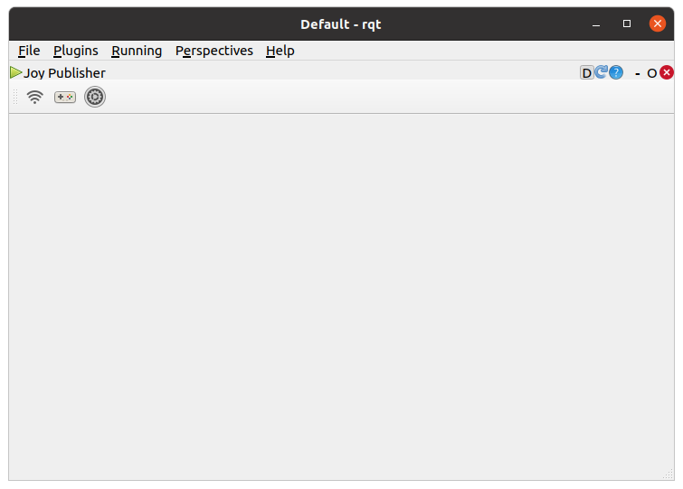
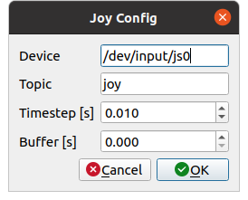
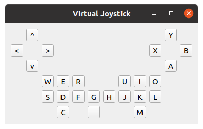

Joy Publisher¶
ここでは、Joy Publisherの使い方を説明します。Joy Publisherは、PCに接続されているゲームパッドの各軸、各ボタンの状態をROSのsensor_mgs/Joyに格納して、トピックをパブリッシュするrqtの拡張機能です。
Joy Publisherの起動¶
Joy Publisherを起動する手順は次のとおりです。
メインメニュー「Plugins」-「Topics」-「Joy Publisher」を選択する
トピックのパブリッシュ¶
トピックをパブリッシュする手順は次のとおりです。
ツールバーのボタン（電波のアイコン）を押してトピックのパブリッシュを開始する（もう一度押すとパブリッシュが停止する）
Joy Publisherの設定¶
Joy Publisherでは、以下の設定をすることができます。
パラメータ |
デフォルト値 |
単位 |
意味 |
|---|---|---|---|
Device |
/dev/input/js0 |
- |
使用するゲームパッド（デバイス）を指定します |
Topic |
joy |
- |
パブリッシュするトピック名を指定します |
Timestep |
0.010 |
s |
sensor_mgs/Joyのバッファの計算に使用します。バッファのサイズは、下記のBuffer/Timestepで計算されます |
Buffer |
0.000 |
s |
sensor_mgs/Joyのバッファの計算に使用します。指定した時間だけトピックが遅れてパブリッシュされます |
キーの設定¶
Joy Publisherでは、以下の設定を変更することができます。

パラメータ |
デフォルト値 |
単位 |
意味 |
|---|---|---|---|
ID |
ゲームパッド毎の初期ID |
- |
軸またはボタンのIDを指定（割付けを変更）します。 |
Max |
1.00 |
- |
軸の入力をしたときの最小値/最大値の絶対値を指定します。1.0のときに最小値/最大値は-1.0/1.0、0.5のときに-0.5/0.5となります |
Dead zone |
0 |
% |
軸の入力をしたときの不感帯の範囲を指定します。0.5のときに不感帯は50%となります |
Reverse |
unchecked |
- |
軸の入力をしたときの値の正負を反転します |
仮想ジョイスティックの利用¶
PCにゲームパッドが接続されていない場合、以下の仮想ジョイスティックを利用してゲームパッドの各軸、各ボタンの入力をすることができます。仮想ジョイスティックは、画面上のボタンをマウスを使ってクリックするか、画面上のボタンに表示されているアルファベットまたは記号のキーをキーボードから入力することで使用します。なお、キーボードから入力するときは、仮想ジョイスティックの画面をアクティブにしてください。
